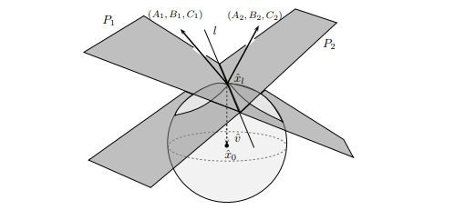

Definiciones a considerar
def: Un Conjunto de nivel para un valor constante $c\in R$ se define como $$S_c=\{x\in R^n |f(x)=c\}$$ Es decir el conjunto de nivel $S_c$ es el conjunto de todos los puntos en el dominio de $f$ donde la funcion toma el valor $c$.
Para localizar los puntos donde una funcion $f$ alcansza sus valores extremos, no basta con encontrar sus puntos criticos. En la mayoria de los casos, la localicacion de estos de una funcion de $R^n$ a $R$, requiere la localizacion de valores extremos sobre conjuntos mas pequeños, resultando ser los conjuntos de nivelde alguna funcion. Lo interesante de este hecho es que si recordamos que el gradiente de una funcion en un punto $\hat{x_0}$ es ortogonal a la curva de nivel que pasa por dicho punto, podemos deducir que en los puntos donde $f$ alcanza sus valores extremos sobre una curva de nivel de otra funcion $g$, el gradiente de $f$ y el gradiente de $g$ son paralelos. Observa la siguiente figura.
 GraficamentePor que el gradiente es normal al conjunto de nivel?
Recodemos que el gradiente de $f$ en un punto $\hat{x_0}$ es un vector que apunta en la direccion de mayor crecimiento de la funcion $f$ en dicho punto. Si consideramos una curva de nivel $S_c$ que pasa por $\hat{x_0}$, todos los puntos de dicha curva cumplen que $f(x)=c$. Por lo tanto, si nos movemos a lo largo de la curva de nivel, el valor de la funcion no cambia. Esto implica que la direccion de mayor crecimiento no puede estar contenida en el plano tangente a la curva de nivel en $\hat{x_0}$, ya que moverse en esa direccion no cambiaria el valor de la funcion. Por lo tanto, el gradiente debe ser ortogonal al plano tangente, y por ende, ortogonal a la curva de nivel en ese punto.